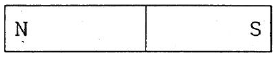
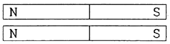
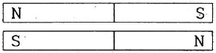
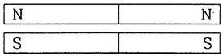
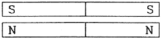
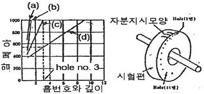
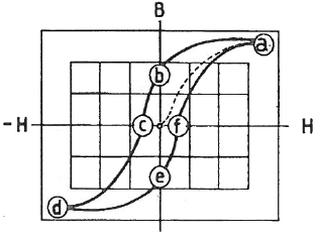

자기비파괴검사기사 (2017-08-26 기출문제)
1과목: 비파괴검사 개론
1. 관의 내경이 2.5cm 이고 내삽형 프로브의 코일 외경이 25.0cm 이면 와전류탐상검사의 충전율은 몇 %인가?
- 64%
- 80%
- 125%
- 156%
(정답률: 40%)

2. 하중을 받는 부품에서 결함의 생성 중에는 검출이 용이하지만, 결함의 생성이 정지된 상태에서는 검출이 어려운 비파괴검사법은?
- 초음파탐상시험
- 방사선투과시험
- 와전류탐상시험
- 음향방출시험
(정답률: 76%)
3. 자력에 대한 자속밀도의 비율을 투자율이라 한다. 다음 중 자력이 시험체에 없을 때와 동일 점에서 측정될 때의 투자율을 무엇이라 하는가?
- 초기투자율
- 실효투자율
- 재료투자율
- 최대투자율
(정답률: 50%)
4. 전기적 성질을 이용하는 비파괴시험 중 정전기현상을 이용한 시험을 할 수 없는 시험체는?
- 법랑의 균열
- 강 용접부의 균열
- 도자기의 균열
- 유리제품의 균열
(정답률: 65%)
5. 초음파탐상검사에서 깊이 방향으로 인접한 두 불연속의 분해능을 증가시키기 위해 가장 좋은 방법은?
- 파장을 길게 한다.
- 주파수를 감소시킨다.
- 펄스 지속 시간을 짧게 한다.
- 송신펄스의 강도를 증가시킨다.
(정답률: 63%)
6. 초강인강에서 나타나는 지체파괴(delayed fracture)의 원인에 대한 설명 중 틀린 것은?
- 강재의 강도 수준이 낮을 경우
- 잔류응력과 인장응력이 있을 경우
- 수소를 함유하는 환경 하에 있을 경우
- 미시적, 거시적인 응력집중부가 존재할 경우
(정답률: 68%)
7. 금속의 조직량을 측정하는 방법이 아닌 것은?
- 점 측정법
- 면적 측정법
- 직선 측정법
- 절단 측정법
(정답률: 73%)
8. Fe-C 상태도에서 탄소 함유량이 0.5%인 아공석강의 A1변태점 직상에서 초석 페라이트의 양은 약 몇 %인가? (단, α의 탄소 함량은 0.025%이며, 공석점에서의 탄소 함량은 0.8%이다.)
- 12.9%
- 25.8%
- 38.7%
- 51.6%
(정답률: 50%)
9. 내식성을 향상시키기 위한 실용 알루미늄 합금이 아닌 것은?
- Al-Mn 계 합금
- Al-Mg 계 합금
- Al-Ni-Sn 계 합금
- Al-Mg-Si 계 합금
(정답률: 65%)
10. Mg합금 중 엘렌트론(Elekton)합금에 대한 설명으로 옳은 것은?
- 가공용 마그네슘합금으로 Mg-Al 합금에 Ni과 As를 첨가한 합금이다.
- 가공용 마그네슘합금으로 Mg-Zr-Cu 합금에 B를 첨가한 합금이다.
- 주조용 마그네슘합금으로 Mg-Al 합금에 소량의 Zn과 Mn을 첨가한 합금이다.
- 주조용 마그네슘합금으로 Mg-Zr-Cu 합금에 소량의 Sn 첨가한 합금이다.
(정답률: 72%)
11. 주성분이 Cu-Zn의 종류가 아닌 것은?
- Cartridge brass
- Muntz metal
- Naval brass
- Cupronickel
(정답률: 65%)
12. 주철의 용탕에 Fe-Si 등을 접종(inoculation)시켜 얻을 수 있는 효과는?
- 재질의 강도 증가
- chill의 깊이 증가
- 흑연의 분포 불균일
- 공정(共晶) cell수 감소
(정답률: 69%)
13. TTT 곡선은 무엇인가?
- 인장곡석
- 수성곡석
- Fe-C 곡선
- 항온변태곡선
(정답률: 75%)
14. 화폐용으로 사용되는 스터링 실버(sterling silver) 귀금속 합금의 조성으로 옳은 것은?
- Ag-1.5% Pt합금
- Ag-10% Pd합금
- Ag-7.5% Cu합금
- Ag-10% Zn합금
(정답률: 64%)
15. 로크웰 경도 시험에서 시험하중이 가장 큰 스케일은?
- A
- B
- C
- D
(정답률: 69%)
16. 아크 쏠림의 방지대책으로 틀린 것은?
- 직류용접을 피하고 교류용접을 한다.
- 용접부가 긴 경우는 후퇴법으로 용접한다.
- 용접봉 끝을 아크 쏠림의 반대편으로 향하게 한다.
- 접지점은 용접부 가까이에 접지하고 긴 아크로 용접한다.
(정답률: 69%)
17. 용접부 변형 방지를 위한 냉각법에 속하지 않는 것은?
- 살수법
- 억제법
- 석면포 사용법
- 수냉 동판 사용법
(정답률: 59%)
18. 접합법의 분류에서 기계적 접합법이 아닌 것은?
- 융접
- 볼트 이음
- 리벨 이음
- 접어 잇기
(정답률: 77%)
19. 용접부의 시험 중 기계적 시험에 속하지 않는 것은?
- 인장 시험
- 굽힘 시험
- 충격 시험
- 침투 시험
(정답률: 84%)
20. 다음 중 아크용접의 종류에 속하지 않는 것은?
- RIG 용접
- MIG 용접
- 스폿 용접
- 스터드 용접
(정답률: 57%)
2과목: 자기탐상검사 원리
21. 자기탐상시험에서 자기장이 균열의 방향과 수평으로 형성될 때 어떤 결과가 나타나는가?
- 균열이 검출되지 않을 수 있다.
- 선명한 선형 지시가 나타난다.
- 지시가 퍼지는 현상이 발생한다.
- 작은 지시들이 나타난다.
(정답률: 90%)
22. 직선 도체에 500[A]의 전류가 흐르고 있을 때 그 도체의 축에서 수직으로 20[cm] 떨어진 점의 자계의 세기는 약 몇 A/m 인가?
- 19.9
- 39.8
- 199
- 398
(정답률: 52%)
23. 아래 그림과 같이 막대자석을 가로로 자른 경우 자극의 변화로 맞는 것은?





(정답률: 89%)
24. 방사선에 의한 피폭이 없고, 높은 조질 콘트라스트를 얻을 수 있으며 횡단면뿐만 아니라 원하는 방향의 어떤 단층 화상도 얻을 수 있는 검사방법은?
- Magenetograph
- 자기공명영상법
- Hall Effecr 법
- 접촉전위차법
(정답률: 80%)
25. 외경이 5인치인 부품을 직류를 사용하여 원형 자화 시키려고 한다. 전류 값은?
- 500~800A
- 800~1000A
- 3500~4500A
- 50.00~6000A
(정답률: 57%)
26. 표면이 열린 균열은 검출할 때 깊이가 깊을수록 나타나는 자분지시가 강하게 나타나는 이유는?
- 자장의 일그러짐이 깊이에 비례하여 심화되기 때문
- 자화전류의 세기가 균열에서 자동으로 높아지기 때문
- 균열의 깊이가 깊으면 자화가 약하기 때문
- 자장의 일그러짐이 깊이에 반비례하여 약해지기 때문
(정답률: 87%)
27. 다음은 사용전류의 표면하 불연속부 검출능에 대한 자화 방법과 감도에 대한 그림이다. 그림에 (a)~(d)에 해당하는 내용이 옳게 연결된 것은?

- a-교류ㆍ건식, b-직류ㆍ건식, c-교류,ㆍ습식, d-직류ㆍ습식
- a-교류ㆍ건식, b-직류ㆍ습식, c-교류,ㆍ건식, d-교류ㆍ습식
- a-교류ㆍ습식, b-직류ㆍ습식, c-교류,ㆍ건식, d-직류ㆍ건식
- a-교류ㆍ습식, b-교류ㆍ건식, c-직류,ㆍ습식, d-직류ㆍ건식
(정답률: 73%)
28. 자기이력곡선에서 ⓐ점이 의미하는 것은?

- 자기포화
- 항자력
- 잔류자기
- 보자력
(정답률: 89%)
29. 습식용 자분을 사용하는 경우 검사액의 농도에 대한 설명으로 잘못된 것은?
- 검사액 농도는 검사액의 단위 체적 속에 포함된 자분의 질량으로 나타낸다.
- 검사액 농도의 적정값은 형광과 비형광 자분에 따라 다르나 형광 자분이 더 낮다
- 검사액 농도는 자분의 입도가 작을수록 엷게 해야 한다.
- 검사액 농도는 침전관을 사용하여 측정해야 하주 정확하다.
(정답률: 45%)
30. 습식자분에서 자분함량이 많을 경우에 나타나는 현상은?
- 건전 부위에 자분모양이 나타나서 결함부화의 구분이 어렵게 된다.
- 결함부에 너무 많은 자분이 흡착되어 원형지시가 선형 지시로 오판될 수 있다.
- 누설자속의 양이 자분의 농도로 인하여 약화된다
- 나사 부위 등 움푹한 부분에 자분이 고이게 되어 후처리를 어렵게 한다.
(정답률: 76%)
31. 표면하 결함을 가장 깊은 곳까지 찾을 수 있는 자화방법의 조합은?
- 교류, 건식법
- 교류, 습식법
- 직류, 습식법
- 직류, 건식법
(정답률: 86%)
32. 외부의 자화력이 제거된 후에도 부품에는 자극의 배열이 질서정연하게 나타나는 경우가 있다. 이때 이들 자극의 배열을 원상태 즉 임의대로 퍼져있는 자극배열로 환원시켜 주는데 소요되는 자력을 무엇이라 하는가?
- 공급되는 DC전류
- 항자력
- 잔류자기
- 투자율
(정답률: 70%)
33. 알루미늄 등의 비철금속은 자분탐상시험을 적용하는데 적합하지 않은 재질이다. 그 이유로 가장 옳은 것은?
- 전도체가 아니기 때문이다.
- 자화되는 정도가 매우 낮기 때문이다.
- 자화가 전혀 되지 않기 때문이다.
- 보자력이 낮기 때문이다.
(정답률: 75%)
34. 시험체 외부의 도체에 통전함에 따라 시험체에 자속을 발생시키는 방식이 아닌 것은?
- 전류관통법
- 근접도체법
- 자속관통법
- 코일법
(정답률: 27%)
35. 자성체의 보자력이란?
- 자속밀도가 “0”을 나타내는 자계의 값이다.
- 전기가 잘 통하는 정도이다.
- 전자기파가 잘 통하는 정도이다.
- 자계의 세기에 대한 자속밀도의 비율이다.
(정답률: 81%)
36. 표면 불연속이 있는 시험면을 축방향으로 자계를 작용시키고 자화했을 때, 시험체 내의 자속밀도가 발생하는지에 대한 설명으로 옳은 것은?
- 투자율이 공기의 수 백배 이상이어서 강자성체 속으로는 자속이 아주 흐르기 쉽기 때문에 강자성체의 표면에 불연속이 있어도 자속은 공간으로 거의 누설되지 않고 불연속의 옆이나 불연속 아래로 우회하여 흐른다.
- 자속밀도가 포화상태에 가깝게 되면 공간으로 누설하는 자속도가 급격히 증가하여 불연속이 없는 정상부분으로 누설하는 자속이 많아진다.
- 투자율은 낮아지지만 강자성체의 속은 자속이 아주 흐르기 쉽기 때문에 자기저항이 점차로 커져서 공간으로 누설하는 자속도가 많아진다.
- 자속밀도가 포화상태에 가깝게 되면 투자율도 커지고 강자성체 우회로의 자기저항이 점점 커져서 공간 및 표면의 불연속부에 누설하는 자속이 아주 많아진다.
(정답률: 65%)
37. 습식 검사액을 만들기 위한 분산매에 관한 사항으로 틀린 것은?
- 점도가 낮고 적심성이 좋을 것
- 휘발성이 적을 것
- 투자율이 높을 것
- 인화점이 높을 것
(정답률: 54%)
38. 습식자분에 사용되는 형광자분의 침전용량은 100mℓ당 얼마가 적절한가?
- 0.1~0.4 mℓ
- 0.5~0.8 mℓ
- 0.9~1.2 mℓ
- 1.3~1.6 mℓ
(정답률: 59%)
39. 시험체의 불연속에서는 자력분포의 균일성이 깨어지는데 이는 무엇의 변화에 기인한 것인가?
- 자기 유도
- 리프트 옵
- 콘덴서 저항
- 투자율
(정답률: 67%)
40. 다음 중 강재인 경우 보자력이 크게 될 수 있는 조건이 아닌 것은?
- 고탄소강일수록
- 냉간가공도가 클수록
- 투자율이 클수록
- 담금질된 것일수록
(정답률: 56%)
3과목: 자기탐상검사 시험
41. 강 용접부를 자분탐상검사할 때 올바른 적용은?
- 판두께가 얇은 용접 개선면의 검사는 극간법이 최적이다.
- 용접 개선면의 검사는 통상 건식자분을 적용한다.
- 고장력강의 용접 뒷면 따내기(Back Gouging)한 면에 대한 검사는 고온용 건식자분을 사용한다.
- 최종 용접표면의 검사는 프로드법이 최적이다.
(정답률: 50%)
42. 직경 20mm, 길이 80mm의 단조품인 볼트나사 부위에 대한 원주방향 결함을 검출하는데 다음 중 가장 적합한 자분탐상시험의 조건은?
- 프로드법, 흑색자분, 연속법
- 코일법, 흑색자분, 건식법
- 코일법, 형광자분, 습식법
- 프로드법, 형광자분, 잔류법
(정답률: 77%)
43. 다음 중 누설자속의 발생에 영향을 주는 요인으로 가장 거리가 먼 것은?
- 자계의 세기
- 자계의 방향
- 결함의 위치
- 자분의 종류
(정답률: 79%)
44. 코일법으로 자화할 때 고탄소강과 저탄소강의 시험체에 적용하는 전류 크기를 비교한 것으로 옳은 것은?
- 고탄소강 시험체는 저탄소강 시험체보다 적은 전류를 적용한다.
- 고탄소강 시험체는 저탄소강 시험체보다 많은 전류를 적용한다.
- 고탄소강 시험체는 저탄소강 시험체와 같은 전류를 적용한다.
- 고탄소강 시험체는 저탄소강 시험체의 전류비교는 의미가 없다.
(정답률: 71%)
45. 다음의 자화방법 중 자분탐상검사를 수행할 때 시험체에 전극을 직접 접촉시켜서 통전하는 방법이 아닌 것은?
- 축통전법
- 프로드법
- 전류관통법
- 직각통전법
(정답률: 75%)
46. 그랭크 샤프트(Crank-shaft)의 자분탐상검사에 대한 설명 줄 틀린 것은?
- 축통전법과 코일자화법의 두방향으로 자화한다.
- 크랭크 암(Crank-arm)주축 부착부에 결함이 발견되기 쉽다.
- 시험체의 형상이 복잡하며 매우 미세한 결함까지 검출해야 하므로 건식자분을 사용한다.
- 자분무늬의 관찰은 복잡한 형상을 고려하여 세심하게 할 필요가 있다.
(정답률: 85%)
47. 연속법에서 일반적으로 권고되는 자속밀도로 가장 적합한 것은?
- 포화자속밀도(Bs)의 10%
- 포화자속밀도(Bs)의 40%
- 포화자속밀도(Bs)의 50%
- 포화자속밀도(Bs)의 120%
(정답률: 65%)
48. 길이 30cm, 직경 8cm 되는 시험체를 자분탐상코일로 선형자화를 수행하고자 한다. 코일의 감긴 수가 6회일 때, 요구되는 전류값[A]은?
- 1000
- 2000
- 5000
- 10000
(정답률: 64%)
49. 누설자속에 의한 결함을 검출하는 누설자속탐상법의 장점이 아닌 것은?
- 결함의 정량 측정이 가능하다.
- 복잡한 시험체의 형상에 적용이 용이하다.
- 객관적인 검사가 가능하여 시험 기록이 남는다.
- 고속주사가 가능하고 출력이 전기신호로 얻어지므로 자동화가 가능하다
(정답률: 64%)
50. 프로드법으로 용접부 표면을 통전할 경우, 용접부 표면에 형성되는 자계에 가장 적게 영향을 미치는 인자는?
- 프로드에 흐르는 전류에 의한 자계
- 자화케이블에 흐르는 전류에 의한 자계
- 반파정류장치에 흐르는 전류에 의한 자계
- 시험체에 흐르는 전류 분포에 의한 자계
(정답률: 66%)
51. 자분모양 중 잔류법을 적용한 시험품이 서로 접촉한 경우 나타나는 지시는?
- 자기펜 지시
- 단면 급변지시
- 자극지시
- 전극지시
(정답률: 90%)
52. 습식연속법의 자분탐상검사에서 자화전류를 언제 정지해야 결함을 양호하게 검출할 수 있는가?
- 습식자분액 적용을 시작하기 전
- 습식자분액 적용을 끝난 즉시
- 습식자분액 적용 후 검사액의 흐름이 정지된 다음
- 습식자분액 적용 후 검사액의 흐름이 정지하기 전
(정답률: 78%)
53. 자분탐상검사에서 표면 바로 밑에 존재하는 결함을 검출할 수 있는데, 교류 자화의 침투깊이에 영향을 주지 않는 인자는 무엇인가?
- 전압
- 주파수
- 투자율
- 전도율
(정답률: 57%)
54. 판재에서 연화처리 없이 압연방법으로 두께를 감소시킬 때, 주로 표면에 평행 방향으로 나타나는 결함은 무엇인가?
- 균열
- 핫티어
- 기공
- 라미네이션
(정답률: 94%)
55. 자기펜 자국에 관한 설명 중 적절한 것은?
- 자화된 시험체가 서로 접촉한 경우에 나타난다.
- 투자율의 경계부위에 나타난다.
- 높은 자장에 따라 나타난다.
- 높은 전류에 따라 나타난다.
(정답률: 90%)
56. 자분탐상검사 시 시험면을 분할하여 검사할 경우의 설명으로 틀린 것은?
- 시험체가 크거나 너무 길어 1회의 자화로 검사할 수 없는 경우
- 시험체의 분할될 경계부에 유효자계가 충분할 경우
- 시험체의 모양이 복잡하기 때문에 1회 자화로 필요한 유효자계 강도를 시험체에 가할 수 없는 경우
- 시험체의 단면이 급변하여 1회 자화로 시험하면 시험면의 유효자계 강도가 너무 강하거나 약할 경우
(정답률: 93%)
57. 누설자속 탐상장치의 누설자속 검출에 사용할 수 없는 것은?
- Hall 소자
- 자기 Diode
- PZT Sensor
- 자기 저항효과 소자
(정답률: 62%)
58. 두께 30mm 인 고장력강 개형 압력용기의 용접부를 보수 검사하는데 자분탐상검사를 실시하고자 할 때 가장 적합한 방법은?
- 교류 극간법, 습식법, 연속법
- 교류 극간법, 건식법, 잔류법
- 직류 극간법, 습식법, 잔류법
- Prod법, 건식법, 연속법
(정답률: 63%)
59. 투자율이 다른 재질의 시험체를 대상으로 자분탐상검사를 수행하였을 때, 굵고 희미한 지시가 검출되었다. 예상되는 지시의 형태는 무엇인가?
- 재질 경계 지시
- 전극 지시
- 표면거칠기 지시
- 오염지시
(정답률: 94%)
60. 환봉형 시험체를 축통전법으로 검사할 때 동일 크기의 자화전류로 직경이 2배인 시험체를 검사한다면 시험면에서의 자계의 세기는 어떻게 되는가?
- 1/2이 된다.
- 2배로 된다
- 4배로 된다
- 8배로 된다.
(정답률: 88%)
4과목: 자기탐상검사 규격
61. 철강 재료의 자분탐상 시험방법 및 자분모양의 분류(KS D 0213)에서 분류가 건식법, 습식법일 때 분류의 조건으로 옳은 것은?
- 자분의 적용시기
- 자분의 종류
- 자분의 분산매
- 자화전류의 종류
(정답률: 68%)
62. 보일러 및 압력용기에 대한 자분탐상검사(ASME Sec.V Art.7)에 따라 탐상을 실시할 때 시험체의 길이 9인치, 직경 3인치인 강봉을 5회 갑아 선형자화법으로 자화할 때 요구되는 자화전류는?
- 1000A
- 3000A
- 5000A
- 9000A
(정답률: 74%)
63. 철강 재료의 자분탐상 시험방법 및 자분모양의 분류(KS D 0213)에서 자분모양을 관찰할 때에 투자율이 다른 재질 또는 금속조직의 경계에 생기는 누설자속에 의해 형성되는 자분모양의 원인으로 틀린 것은?
- 용접부의 용접금속과 모재의 경계
- 열처리 경계
- 냉간 가공의 표면가공도가 다른 부분
- 단면적이 급변하는 곳의 용입부족
(정답률: 61%)
64. 배관 용접부의 비파괴시험 방법(KS B 0888)에 의거 자분탐상시험을 실시할 경우 사용할 수 있는 표준시험편은?
- A1-7/50(직선형)
- A1-7/50(원형)
- A2-7/50(직선형)
- A2-7/50(원형)
(정답률: 58%)
65. 보일러 및 압력용기에 대한 자분탐상검사(ASME Sec.V Art.7)에 따라 지름이 50MM이고 길이가 250MM인 환봉을 코일법으로 선형자화 할 때에 주어지는 자계의 강도(AT)는?
- 500
- 1000
- 5000
- 9000
(정답률: 60%)
66. 철강 재료의 자분탐상 시험방법 및 자분모양의 분류(KS D 0213)에서 시험결과 나타난 지시가 의사모양인지의 여부를 확인하는 방법으로 옳은 것은?
- 자기펜 자국은 탈자 후 재시험한다.
- 재질경계지시는 잔류법으로 재시험한다.
- 전류지시는 전류를 크게 하여 재시험한다.
- 표면거칠기지시는 백색페인트를 칠한 후 재시험한다.
(정답률: 80%)
67. 철강 재료의 자분탐상 시험방법 및 자분모양의 분류(KS D 0213)에서 시험장치의 보수 점검을 적어도 년 1회 이상하고, 1년 이상 사용하지 않을 경우에는 사용 시 점검하여 성능을 확인하도록 되어있는 것은?
- 전압계, 전류계, 자장계
- 전류계, 타이머, 자외선 조사장치
- 타이머, 자장계, 조도계
- 자외선 조사장치, 자장계, 조도계
(정답률: 62%)
68. 보일러 및 압력용기에 대한 자분탐상검사(ASME Sec.V Art.7)에서 탐상시험방법의 규정에 따라 케토스 링 시험편을 전파정류가 적용된 중심도체를 사용하여 원형자화할 때 중심도체의 길이는?
- 300mm 초과
- 400mm 초과
- 500mm 초과
- 600mm 초과
(정답률: 43%)
69. 철강 재료의 자분탐상 시험방법 및 자분모양의 분류(KS D 0213)에서 용접부 탐상검사를 할 때 전처리 범위는 얼마가 좋은가?
- 약 10mm 넓게
- 약 15mm 넓게
- 약 20mm 넓게
- 약 50mm 넓게
(정답률: 79%)
70. 보일러 및 압력용기에 대한 자분탐상검사(ASME Sec.V Art.7)에서 시험체 두께 1인치, 프로드 간격 6인치, 전류 650[A]를 사용하여 검사한 경우와 프로드 간격만 12인치로 변경하였을 때 탐상 결과를 옳게 설명한 것은?
- 두 가지 모두 선명도가 동일한 결과를 얻는다.
- 6인치의 경우 자분지시가 더 선명하다.
- 선명도에는 두 가지 모두 영향이 없다.
- 12인치의 경우 자분지시가 더 선명하다.
(정답률: 80%)
71. 철강 재료의 자분탐상 시험방법 및 자분모양의 분류(KS D 0213)에서 충격전류를 적용할 때 표면의 흠판을 대상으로 하는 가장 큰 이유는?
- 모서리효과가 있기 때문에
- 연속법으로 사용할 수 있기 때문에
- 통전시간이 짧으므로
- 시험면을 태울 수 있으므로
(정답률: 36%)
72. 철강 재료의 자분탐상 시험방법 및 자분모양의 분류(KS D 0213)에서 용접부의 열처리 후에 하는 시험의 자화방법은 원칙적으로 어느 방법에 따라야 하는가?
- 극간법
- 코일법
- 프로드법
- 다중자화법
(정답률: 79%)
73. 철강 재료의 자분탐상 시험방법 및 자분모양의 분류(KS D 0213)에 따라 연속법에서 유효자계의 방향 및 강도를 확인할 필요가 있는 경우 사용되는 것으로 잘못된 것은?
- A형 원형 표준시험편
- A형 직선형 표준시험편
- B형 대비시험편
- C형 표준시험편
(정답률: 81%)
74. 철강 재료의 자분탐상 시험방법 및 자분모양의 분류(KS D 0213)에 규정된 용어 중 “시험품에 자속을 발생시키는데 사용하는 전류”를 의미하는 것은?
- 자화전류
- 정류
- 충격전류
- 교류
(정답률: 91%)
75. 보일러 및 압력용기에 대한 자분탐상검사(ASME Sec.V Art.7)에 의해 프로드법으로 탐상할 때 시험체 두께에 따라 권고되는 프로드 간격별 전류값(암페어/인치)으로 옳은 것은?
- 3/4인치 미만 : 100~25, 3/4인치 이상 : 90~110
- 3/4인치 미만 : 90~110, 3/4인치 이상 : 100~125
- 3인치 미만 : 100~125, 3인치 이상 : 90~110
- 3인치 미만 : 90~110, 3인치 이상 : 100~125
(정답률: 73%)
76. 철강 재료의 자분탐상 시험방법 및 자분모양의 분류(KS D 0213)의 자화 전류에 관한 설명 중 옳은 것은?
- 교류 사용 시는 원칙적으로 연속법에 한한다.
- 충격전류를 사용할 때에는 연속법에 한한다.
- 직류를 사용할 때에는 연속법만 사용할 수 있다.
- 맥류는 그것에 포함되는 교류성분이 큰 만큼 내부 결함의 검출 성능이 높다.
(정답률: 74%)
77. 철강 재료의 자분탐상 시험방법 및 자분모양의 분류(KS D 0213)에서 잔류법에 대한 원칙적인 통전시간은?
- 1/4~1초
- 2~10초
- 3분 이내
- 5분 이상
(정답률: 90%)
78. 보일러 및 압력용기에 대한 자분탐상검사(ASME Sec.V Art.7)에서 습식자분 용액의 점도는 작업온도에서 얼마를 초과하지 않아야 하는가?
- 1 mm2/s
- 2 mm2/s
- 5 mm2/s
- 7 mm2/s
(정답률: 43%)
79. 철강 재료의 자분탐상 시험방법 및 자분모양의 분류(KS D 0213)에 의한 자화전류에 대한 설명으로 맞는 것은?
- 교류 및 충격전류는 표면근방의 내부결함 검출에 사용된다.
- 교류를 사용하여 자화하는 경우는 연속법 및 잔류법을 사용할 수 있다.
- 직류 및 맥류를 사용하여 자화하는 경우는 연속법에 한한다.
- 직류 및 맥류를 사용하여 자화하는 경우는 표면결함 및 표면근방의 내부결함을 검출할 수 있다.
(정답률: 66%)
80. 철강 재료의 자분탐상 시험방법 및 자분모양의 분류(KS D 0213)에 따라 자분탐상검사할 때 잔류법에서 시험체가 서로 접촉했을 때 생기는 지시는?
- 전극지시
- 전류지시
- 표면 거칠기 지시
- 자기펜 자국
(정답률: 95%)
충전율(%) = (코일 외경^2) / (4 x 내경^2) x 100
= (25.0^2) / (4 x 2.5^2) x 100
= 64%
따라서, 정답은 "64%"이다. 이유는 코일 외경과 내경의 비율이 충전율과 직접적으로 연관되기 때문이다. 코일 외경이 내경의 10배이므로, 충전율은 10^2 = 100배가 증가한다. 따라서, 내경이 작을수록 충전율이 높아지고, 코일 외경이 클수록 충전율이 높아진다.